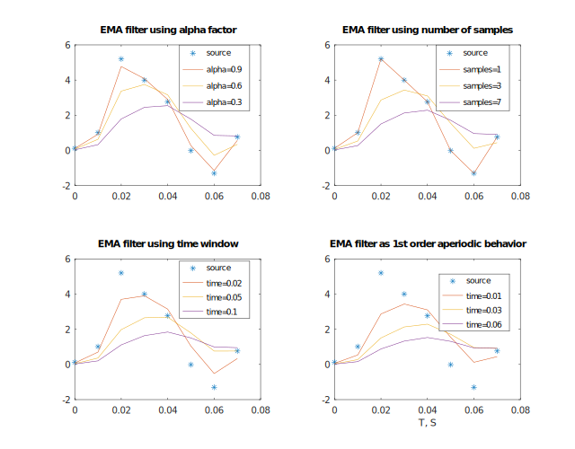

Filter parameters using α factor
Filter parameters using 1st-order transmission behavior
Filter parameters using number of samples to smooth
Filter parameters using time window to smooth
Init EMA parameters using α factor
Init EMA parameters using number of samples
Init EMA parameters using time window
Init EMA parameters as 1st-order transmission behavior.
Filter parameters flavor
EMA filter parameters
EMA filter state
Check for parameters flavor
EMA filter
Exponential Moving Average filter.
EMA is a simple and fast filter which does not require delay-line but only single result of previous evaluation as a state.
Filter formula: y = α x + (1 - α) y_{z^{-1}}
There are different ways of definition a filter parameters, such as:
